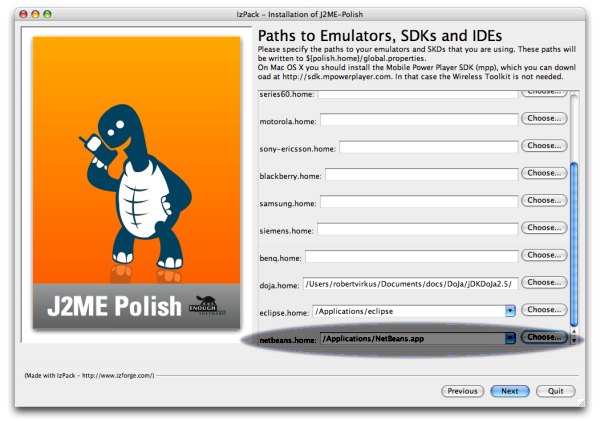
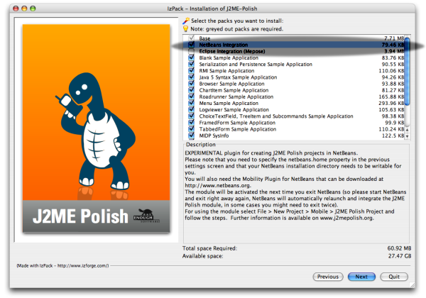
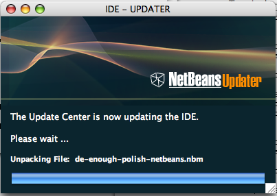

You can install the NetBeans module during installation of J2ME Polis.
You need a working NetBeans installation
with an installed mobility pack.
Additionally you will need a preverifier and at least one emulator:
For Windows we recommend the Sun Wireless Toolkit for CLDC (currently version 2.5).
For Linux we recommend the J2ME Wireless Toolkit for CLDC (version 2.5).
For Mac OS X we recommend the MPowerPlayer.
Also note that you need to install the mobility pack manually on OS X.
During the installation of J2ME Polish you have to specify where you have installed NetBeans and you have to select that you wish to install the NetBeans module. The module will be installed automatically the next time you quit NetBeans.
NOTE: you need writing rights for your NetBeans installation directory to install the J2ME Polish integration.
Specify where to find NetBeans:

Select to install the NetBeans integration:

Now you have to restart NetBeans. Just quit NetBeans, it will restart automatically and install the module:

Note that in some cases a second restart is required for the successfull installation.
Now you can create new J2ME Polish projects by selecting File > Project > Mobile > J2ME Polish.
<%include end.txt %>